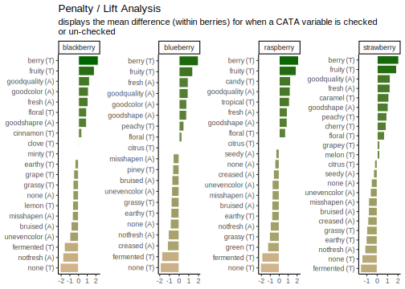
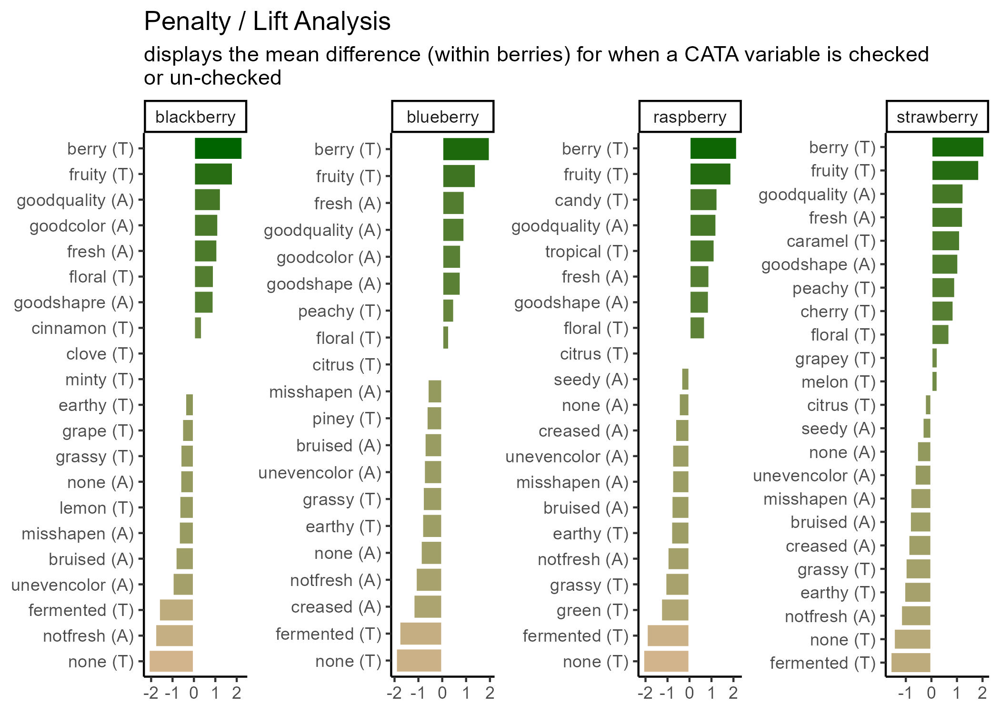

3 Fine-Tuning Publication-Quality ggplots
The plots we’ve been making so far are fairly straightforward demonstrations. At the very end of Chapter 3, we briefly showed you the code and results for this plot:

Which uses some tricks from the stringr and tidytext packages in order to give us easy-to-read labels. Using the existing column names and variable-codes in our original data to make a first draft of a plot, it would’ve looked more like this:
berry_penalty_analysis_data %>%
select(-count) %>%
pivot_wider(names_from = checked,
values_from = penalty_lift,
names_prefix = "checked_") %>%
mutate(penalty_lift = checked_1 - checked_0) %>%
ggplot(mapping = aes(x = cata_variable, y = penalty_lift)) +
geom_col(aes(fill = penalty_lift), color = "white", show.legend = FALSE) +
facet_wrap(~berry, scales = "free", nrow = 2) +
coord_flip() +
theme_classic() +
scale_fill_gradient(low = "tan", high = "darkgreen")
Which we’re showing because we have seen similar plots published in journal articles, with the overlapping text, redundant axis labels, and all. We can make this more readable by reordering the CATA attributes, shortening and reformatting the labels, and possibly by removing some extraneous elements like the cata_variable label on the Y axis. These are common steps that make a huge difference.
And we’ll get there, but first…
3.1 Exporting and Saving Plots
It may seem like a weird time to be talking about saving plots, when we haven’t gotten to the “fine-tuning” yet, but you should already be familiar with a few examples of things that change when the aspect ratio of the plot or the monitor you’re viewing it on changes slightly. It is basically impossible to export a ggplot at the resolution needed for publishing without changing the aspect ratio, relative sizes, or space between some elements from what you’re looking at in the Plots pane or the .Rmd chunk output.
It’s good practice to export your plot as an image (or pdf or knit-together document or however else you plan to export it) and re-export it periodically as you go through fine-tuning.
This is also, probably, the most important part of this chapter. You will have to get every plot that you publish out of R somehow, after all! After that, we’ll cover some tricks that we draw upon frequently, but you may find that you have different problems or priorities, or that some of these needs are situational.
But you will have to export plots for every project you want to share with the world.
3.1.1 What format?
You can, as we’ve already discussed, save a ggplot object in a .rds file. But that won’t let you put it into your powerpoint, or manuscript, or take it to the printer. You need an image file. The exact type of image will depend on the other software you’re using for your report, presentation, paper, book, etc.
There are two major ways to save the kind of spatial color data that comprise images such as graphs. You can store them as vector graphics, which can be rescaled because they’re made up of lines and shapes (most commonly, .pdf and .svg) or as raster (bitmap) graphics, which store images as a grid of pixels which each have a single uniform color (most commonly, .png and .jpeg).
.pdfvector images are best for LaTeX and professional publishing.svgvector images are more widely supported in word processors and websites.pngraster images are the most predictable to print, the best for web publishing, and can be used in pretty much every software ever made, if you know exactly the size you want..jpeg(along with.tiff) raster images are the raster format preferred by Food Quality and Preference editors. They are worse for web publishing than.pngbut share its other advantages.
Note that ggsave() is like making a .pdf version of your working documents: you will not be able to read the plot images into R for editing anymore, no matter which format you save in.
3.1.2 Exporting Images with ggsave()
The easiest way to reproducibly save plots, so that all of your export options are in your code and you might be able to recreate it on a different computer, is with the function ggplot2::ggsave(), which works similarly to the write_*() functions and save(). You give it a file name to save to, relative to the current working directory, and then the variable where your plot is saved.
ggsave() supports all of the above-named image formats, as well as .eps, .ps, .tex (pictex), and .bmp. It will figure out from the file extension (the stuff after the . in the filename argument) what image type it’s saving as, but you can also specify it explicitly with the device argument.
If you’re reading this right now, you’re looking at a webpage created using bookdown and knitr. We can’t actually directly embed .pdf images in this site, but let’s look at a few other example formats using the same plots.
ggsave("img/penalty-lift-svg.svg", p1_berry_penalty)
ggsave("img/penalty-lift-jpeg.jpeg", p1_berry_penalty)Now let’s compare how each of these looks! First, inside R:

The .svg image made by ggsave():

The .png image made by ggsave():

The .jpeg image made by ggsave():

The two raster formats look basically the same, and only slightly different from the .svg and the version in the .html version of this tutorial. If you’re following along in your own R session, however, you’ll notice that these saved plots all look more similar to each other than they do to the initial plot you’re previewing inside R. All of the plots have a bit more space around the text using ggsave(), taller bars, and a different aspect ratio (\(width/height\)).
We can adjust these using the rest of the arguments to ggsave(). The width, height, and units primarily control the image size (for raster images) and aspect ratio (for all images), but they also affect the relative size of plot elements. Larger plots will have axis labels, text, and geom_*()s that take up less of the overall plotting area, and vice-versa for smaller images.
If you get to this stage with a vector image and realize that all of the fixed-size elements (e.g., text) are too big or too small, you can use ggsave()’s scale argument. scale < 1 makes all the fixed-size elements smaller relative to the plot size and scale > 1 makes all the elements bigger relative to the plot size. scale < 1 will generally also give you a larger plot area and more space between your geoms.
ggsave("img/penalty-lift-svg-7x4.svg", p1_berry_penalty,
width = 7, height = 4, units = "in")
ggsave("img/penalty-lift-svg-14x8.svg", p1_berry_penalty,
width = 14, height = 8, units = "in")
ggsave("img/penalty-lift-svg-14x8-rescale.svg", p1_berry_penalty,
width = 14, height = 8, units = "in", scale = .5)The 7x4” vector plot:

The same plot saved at 14x8”:

A 14.8” plot with scale = 0.5:

All of these .svg images are displayed at 7x4” on your screen, but the plot we made with width = 14, height = 8 has smaller text and larger plotting areas unless we correct this with scale. penalty-lift-svg-7x4.svg and penalty-lift-svg-14x8-rescale.svg are actually identical files.
You should avoid using scale for rasters, as it will create plots that will not print at the size (width and height) and resolution (dpi) you specified. If you find yourself wanting to change the scale of a raster image, you should refer to the reference we’ve put together on dpi in the Appendix.
3.1.3 Other Image Export Options
This is not a knitr or bookdown tutorial, because we had to choose our topics, but we used the bookdown package to make the online webpage version of this tutorial. It comes with its own advantages and challenges, but it does significantly streamline the image-generation process for any project where the only file you need is one LaTeX file, .html page, or .pdf output with all of the text and all of the figures. If that sounds appealing to you, turn your attention to “bookdown: Authoring Books and Technical Documents with R Markdown” by Yihui Xie.
3.2 Making Text Look Okay
A good R variable or column name doesn’t have any spaces or punctuation other than underscores (_) and dots (.), to avoid all those pesky backticks (```) in our code.
This is very different from what a good label in a plot looks like. You’ll often want to make some sort of mass changes to column names or text variables before plotting, in order to address this.
3.2.1 Powerful Text Manipulation with stringr
The stringr package is a part of the tidyverse, so you have it already loaded whenever you run library(tidyverse). It has a lot of useful functions for working with text (called “strings” in many programming languages), mostly of the form str_*(). One thing you can do is change labels to uppercase, lowercase, “sentence case”, or “title case” (first letter of each word capitalized), as appropriate:
berry_penalty_analysis_data %>%
select(berry) %>%
mutate(Upper = str_to_upper(berry),
Title = str_to_title(berry)) # Capitalizes the first letter of each word## # A tibble: 170 × 3
## berry Upper Title
## <chr> <chr> <chr>
## 1 blackberry BLACKBERRY Blackberry
## 2 blackberry BLACKBERRY Blackberry
## 3 blackberry BLACKBERRY Blackberry
## 4 blackberry BLACKBERRY Blackberry
## 5 blackberry BLACKBERRY Blackberry
## 6 blackberry BLACKBERRY Blackberry
## 7 blackberry BLACKBERRY Blackberry
## 8 blackberry BLACKBERRY Blackberry
## 9 blackberry BLACKBERRY Blackberry
## 10 blackberry BLACKBERRY Blackberry
## # ℹ 160 more rowsstr_replace() and str_replace_all() are very useful for dealing with underscores or periods. You give it string, the text vector you want to modify (inside mutate(), a column name); then pattern, the character(s) you want to replace; then replacement, what you want to replace them with.
berry_penalty_analysis_data %>%
select(-count) %>%
pivot_wider(names_from = checked,
values_from = penalty_lift,
names_prefix = "checked_") %>%
mutate(cata_variable = str_replace_all(cata_variable, "_", ": "))## # A tibble: 85 × 4
## berry cata_variable checked_0 checked_1
## <chr> <chr> <dbl> <dbl>
## 1 blackberry appearance: fresh 4.70 5.80
## 2 blackberry appearance: goodcolor 4.63 5.77
## 3 blackberry appearance: goodquality 4.69 5.96
## 4 blackberry appearance: goodshapre 4.93 5.86
## 5 blackberry appearance: misshapen 5.63 4.92
## 6 blackberry appearance: none 5.42 4.78
## 7 blackberry appearance: notfresh 5.57 3.76
## 8 blackberry appearance: unevencolor 5.53 4.53
## 9 blackberry appearane: bruised 5.53 4.67
## 10 blackberry taste: berry 4.21 6.49
## # ℹ 75 more rowsThey can both be as long as you like. If pattern = _ and there’s more than one _ in one of the strings, str_replace() will only replace the first one and str_replace_all() will replace them all.
## [1] "long text_with_many_underscores"## [1] "long text with many underscores"You can add multiple sets of patterns and replacements to str_replace_all() using a named list: c("pattern1" = "replace1", "pattern2" = "replace2". This is useful to, for instance, fix multiple typos like “goodshapre”. Unlike the case_when() example we showed before, you can fix typos that occur anywhere in the text, even if they’re only parts of a word.
berry_penalty_analysis_data %>%
select(-count) %>%
pivot_wider(names_from = checked,
values_from = penalty_lift,
names_prefix = "checked_") %>%
mutate(cata_variable = str_replace_all(cata_variable,
c("shapre" = "shape",
"appearane" = "appearance",
"_" = " ")))## # A tibble: 85 × 4
## berry cata_variable checked_0 checked_1
## <chr> <chr> <dbl> <dbl>
## 1 blackberry appearance fresh 4.70 5.80
## 2 blackberry appearance goodcolor 4.63 5.77
## 3 blackberry appearance goodquality 4.69 5.96
## 4 blackberry appearance goodshape 4.93 5.86
## 5 blackberry appearance misshapen 5.63 4.92
## 6 blackberry appearance none 5.42 4.78
## 7 blackberry appearance notfresh 5.57 3.76
## 8 blackberry appearance unevencolor 5.53 4.53
## 9 blackberry appearance bruised 5.53 4.67
## 10 blackberry taste berry 4.21 6.49
## # ℹ 75 more rowsBe careful using short patterns, because they will replace every example even if it’s only part of a word.
#This can lead to unintentional side-effects
c("nocolor", "none", "cornonthecob", "anode") %>%
str_replace_all("no", " NO ")## [1] " NO color" " NO ne" "cor NO nthecob" "a NO de"#Or it can be useful for fixing lots of similar problems all at once
berry_penalty_analysis_data %>%
select(-count) %>%
pivot_wider(names_from = checked,
values_from = penalty_lift,
names_prefix = "checked_") %>%
mutate(cata_variable = str_replace_all(cata_variable,
c("not" = "not ",
"good" = "good ",
"uneven" = "uneven ",
"_" = " ")))## # A tibble: 85 × 4
## berry cata_variable checked_0 checked_1
## <chr> <chr> <dbl> <dbl>
## 1 blackberry appearance fresh 4.70 5.80
## 2 blackberry appearance good color 4.63 5.77
## 3 blackberry appearance good quality 4.69 5.96
## 4 blackberry appearance good shapre 4.93 5.86
## 5 blackberry appearance misshapen 5.63 4.92
## 6 blackberry appearance none 5.42 4.78
## 7 blackberry appearance not fresh 5.57 3.76
## 8 blackberry appearance uneven color 5.53 4.53
## 9 blackberry appearane bruised 5.53 4.67
## 10 blackberry taste berry 4.21 6.49
## # ℹ 75 more rowsSo far, we’ve been replacing letters and underscores, which is what we have in our example data. You can also use str_replace() for periods (.), although you may be surprised when you first try:
## [1] " "## [1] "long text with many periods"We have to escape the period (with an escaped backslash, technically, but for now just know that you must put two backslashes \\ before special characters when using stringr). Because the str_* functions with a pattern can use Regular Expressions (or regex), the characters (\, ., [, ], {, }, (, ), <, >, *, +, -, =, !, ?, ^, $, and |) need to be escaped with two backslashes if you need to replace them.
Regex are extremely powerful tools for finding patterns in text, similar to the intuitive ways a human might recognize something like an email address, a measurement, or a parenthetical. We will not be talking about regex today, but if you want to see some examples and resources for learning how to use them, we’ve provided a short overview and links to some resources in the Appendix.
3.3 Removing Legends and Plot Elements
You’ve already seen us use + theme(panel.grid = element_blank()) to get rid of the grid lines in a plot. You can use element_blank() to get rid of lots of plot elements you might not want for whatever reason, usually because it’s redundant with information you have elsewhere and thus just making the plot look more complicated or harder to read at a glance. The most common things you might want to remove are:
plot.title, if some function added a title to the top of your plot and you want to get rid of it.axis.title,axis.title.x, oraxis.title.yif you don’t need the column name(s) labeling your axesaxis.ticks,axis.ticks.x, oraxis.ticks.yif you want to remove the little tick marks along a given axis (useful for bar plots)
berry_long_liking %>%
ggplot(aes(x = Scale, y = Liking, color = Scale)) +
ggbeeswarm::geom_quasirandom() +
facet_wrap(~ Attribute) +
theme_bw() +
theme(panel.grid = element_blank(),
axis.ticks = element_blank(),
legend.position = "none")
You can see a nearly-full list of the arguments to ggplot2::theme() in the theme help files (?theme), unlike with ggplot2 aesthetics and the geom_*() help files.
If you want to remove the legend, you use + theme(legend.position = "none"), but if you want to remove specific geoms from the legend, then you have to adjust your geom_*() calls.
ca_cider$col$coord %>%
as_tibble(rownames = "Attribute") %>%
mutate(Modality = case_when(Attribute == "Sweet" ~ "Taste",
Attribute == "Bitter" ~ "Taste",
Attribute == "Sour" ~ "Taste",
Attribute == "Smooth" ~ "Mouthfeel",
Attribute == "Dry" ~ "Mouthfeel",
Attribute == "FullBodied" ~ "Mouthfeel",
.default = "Aroma")) %>%
ggplot(aes(x = `Dim 1`, y = `Dim 2`,
label = Attribute, color = Modality)) -> ca_cider_colored
ca_cider_colored +
geom_point() +
ggrepel::geom_text_repel()

3.4 Ordered Categorical Variables
Many of the figures we’ve made so far have had one axis with a categorical variable. Have you figured out how ggplot2 orders the levels of categorical variables? If you have noticed, it’s likely because it’s in a different order than the one we’d like.
long_cider_data %>%
filter(checked == 1) %>%
ggplot(aes(x = cata_variable)) +
geom_bar() +
coord_flip() +
facet_grid(vars(Temperature), vars(Sample_Name))
The CATA attributes are in alphabetical order. This is how ggplot2 treats all character variables, and you can exert some control over the ordering by turning the variable into an ordered factor.
3.4.1 Specifying Ordinal Variables as Factors
You can order variables by hand, if there’s a particular order you have in mind:
long_cider_data %>%
mutate(cata_variable = factor(cata_variable,
levels = c("Sweet", "Sour", "Bitter",
"Smooth", "Dry", "FullBodied",
"Light",
"Fruity", "Berries", "Fresh_Apples",
"Floral", "Spice",
"Herbal", "Woody", "Earthy",
"Funky", "Fermented", "Vomit",
"Synthetic", "Candy",
"Metallic", "Alcohol"))) -> long_cider_manual_factors
long_cider_manual_factors %>%
filter(checked == 1) %>%
ggplot(aes(x = cata_variable)) +
geom_bar() +
coord_flip() +
facet_grid(vars(Temperature), vars(Sample_Name))
Note that the attribute you list first when you’re specifying the levels will become 1, then 2, then 3. With coord_flip(), that puts it at the bottom of the plot.
long_cider_manual_factors %>%
distinct(cata_variable) %>%
mutate(variable_number = as.numeric(cata_variable))## # A tibble: 22 × 2
## cata_variable variable_number
## <fct> <dbl>
## 1 Fresh_Apples 10
## 2 Fermented 17
## 3 Herbal 13
## 4 Dry 5
## 5 Spice 12
## 6 Fruity 8
## 7 Smooth 4
## 8 Alcohol 22
## 9 Light 7
## 10 Sweet 1
## # ℹ 12 more rowsThis gives us control, but it’s pretty annoying to write out for large lists of attributes, and you have to be sure the spelling and capitalization match exactly. Often, like with the penalty analysis plots, what we actually want to do is order the Attributes in terms of some other numerical variable, like frequency or size of penalty.
One way is to arrange() the data the way you want it and then use that order to specify the levels.
long_cider_data %>%
# Counting the number of times each attribute is used across all products:
group_by(cata_variable) %>%
mutate(variable_count = sum(checked)) %>%
ungroup() %>%
# Arranging from least-to-most used:
arrange(variable_count) %>%
# Converting to a factor, so the least-used will be 1st, then the next:
mutate(cata_variable = factor(cata_variable, levels = unique(cata_variable),
ordered = TRUE),
variable_number = as.numeric(cata_variable)) -> long_cider_frequency_factors
#Now the plot:
long_cider_frequency_factors %>%
filter(checked == 1) %>%
ggplot(aes(x = cata_variable)) +
geom_bar() +
coord_flip() +
facet_grid(vars(Temperature), vars(Sample_Name))
3.4.2 Facets with Different Category-Orders
You’ll notice that our reordered categorical axes still have the same order across all of the plots. This would be true even if we changed our group_by() call and used within-product sums to calculate levels. The order is based on factor levels for a single column, and Fresh_Apples can’t be “more than” Dry in one part of the column and “less than” in another part.
On its own, facet_wrap(..., scales = "free") can drop unneeded attributes from plots, but it will still keep the same order of the attributes across all axes.
If you have a faceted plot and you want each facet to have a different ordering of the terms, like in our big penalty analysis example, you’ll have to use tidytext::reorder_within(), tidytext::scale_*_reordered(), and facet_wrap(..., scales = "free"), all at once:
long_cider_data %>%
# Counting the number of times each attribute is used across all products:
group_by(Sample_Name, Temperature, cata_variable) %>%
mutate(Product = str_c(Sample_Name, " (", Temperature, ")"),
variable_count = sum(checked),
cata_variable = tidytext::reorder_within(cata_variable,
by = variable_count,
within = list(Sample_Name, Temperature))) %>%
ungroup() %>%
filter(checked == 1) %>%
ggplot(aes(x = cata_variable)) +
geom_bar() +
tidytext::scale_x_reordered() +
coord_flip() +
# This will not work with facet_grid, because it forces all plots in a row to
# share a vertical axis, even with scales = "free"
facet_wrap(~ Product,
scales = "free")
3.5 Putting it all together
Now, at long last, we’re ready to walk line-by-line through the example penalty analysis figure that we’ve just been copy-pasting so far in the workshop.
berry_penalty_analysis_data %>%
select(-count) %>%
pivot_wider(names_from = checked,
values_from = penalty_lift,
names_prefix = "checked_") %>%
separate(cata_variable,
into = c("mode", "variable"),
sep = "_") %>%
mutate(penalty_lift = checked_1 - checked_0,
mode = case_when(mode == "taste" ~ "(T)",
mode == "appearance" ~ "(A)",
mode == "appearane" ~ "(A)")) %>%
unite(variable, mode, col = "cata_variable", sep = " ") %>%
mutate(cata_variable = tidytext::reorder_within(x = cata_variable,
by = penalty_lift,
within = berry)) %>%
ggplot(mapping = aes(x = cata_variable, y = penalty_lift)) +
geom_col(aes(fill = penalty_lift), color = "white", show.legend = FALSE) +
facet_wrap(~berry, scales = "free", nrow = 1) +
tidytext::scale_x_reordered() +
coord_flip() +
theme_classic() +
scale_fill_gradient(low = "tan", high = "darkgreen") +
labs(x = NULL, y = NULL,
title = "Penalty / Lift Analysis",
subtitle = "displays the mean difference (within berries) for when a CATA variable is checked\nor un-checked")